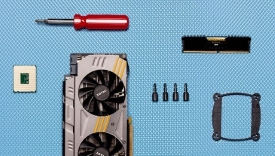
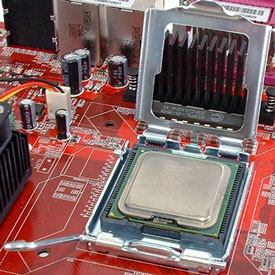

Articles
The most difficult and time-consuming part of the PC-building process happens long before you start looking for the screwdriver. You can't even start thinking about assembling the individual components until you buy them—and that means doing a lot of investigating into the options (of which there are thousands) and, believe it or not, some serious soul-searching.
-

Computer Components.
The first, and most important, thing to consider is: What do you want your PC to do? Are you looking for a really inexpensive system to put in the kids' room? Do you want a squat, console-like desktop that will fit right next to the TV that you can use for streaming media, or maybe as a Steam Machine? Is a dedicated work PC for your home office the goal? Or do you want the biggest, baddest build that can play the hottest new games without breaking a sweat?
We can't answer this question for you. But once you've reached a decision, you'll have a better idea of what you need to buy and how much money you'll have to spend. And then you can get on to the actual shopping...
Click here to view the rest of this article
Many technicians refer to the CPU, motherboard, DRAM and graphics as a platform. These parts can be assembled and tested outside of a case by connecting a power supply and power button. And, except for a discrete (separate) graphics card, they can usually be inserted as an assembly into an empty enclosure.
-

AMD Processor In Socket.
Socketed processors have followed a common theme for at least 20 years: an arrow on one corner of the CPU aligns to another arrow on the CPU socket. This is the first method manufacturers use to assure proper orientation, but AMD also uses missing pins with blocked interface holes to further prevent improper installation.
CPU pins are easy to bend, so if you're really rushing through the motions, it's certainly possible to force a processor into its socket the wrong way, smashing its pins in the process. With the tension lever released as shown, the CPU should literally drop into the socket under its own weight, with no force applied. These are known as Zero Insertion Force (ZIF) sockets.
After checking to make sure the CPU is fully inserted, press the tension lever into the horizontal position to lock it in place.
LGA processors have edge notches to prevent incorrect installation in addition to being marked with an arrow as a visual guide. A load plate holds the pinless CPU tight against socketed contacts, called lands. One or two locking levers apply the load.
After making sure that the CPU is correctly installed (as shown above), lower the steel load plate over the CPU and rotate the wire clamp into its locked position.